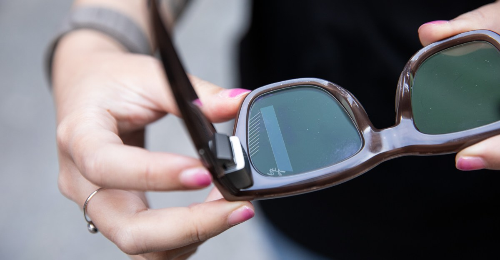
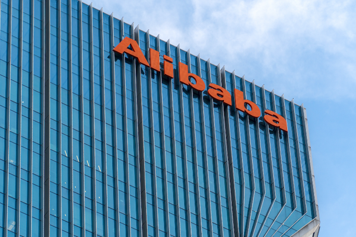
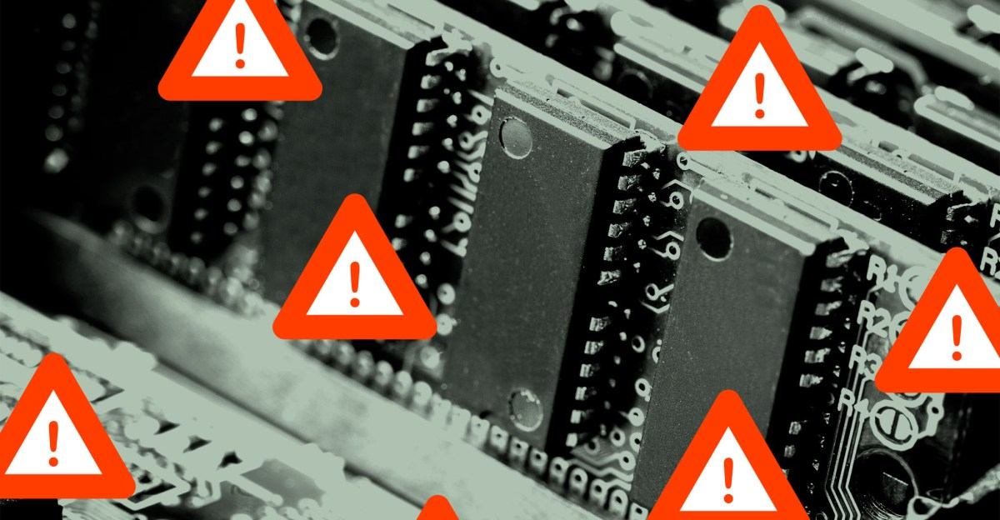
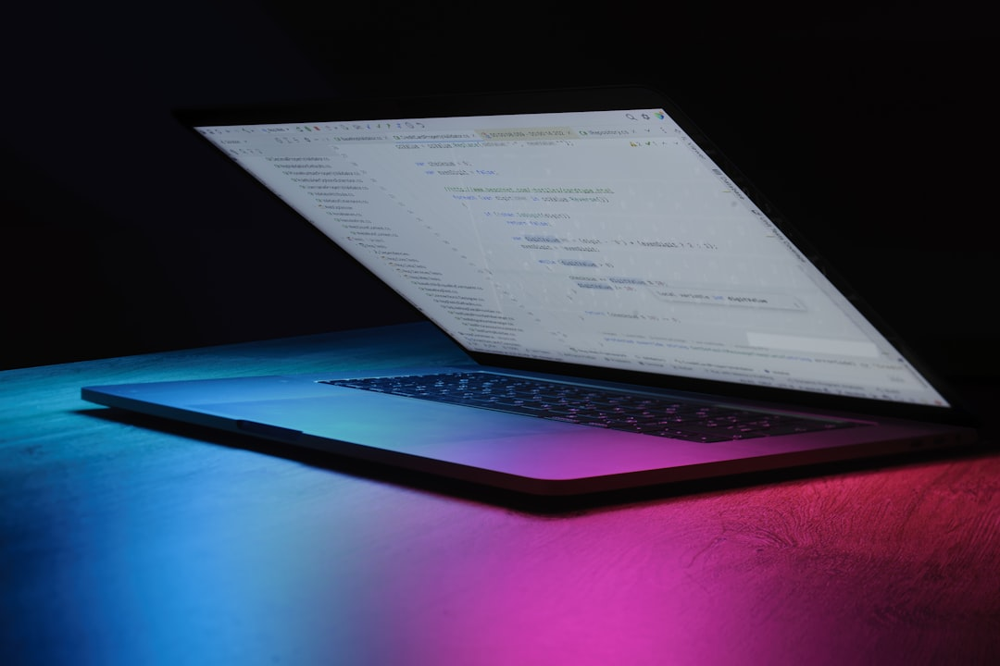
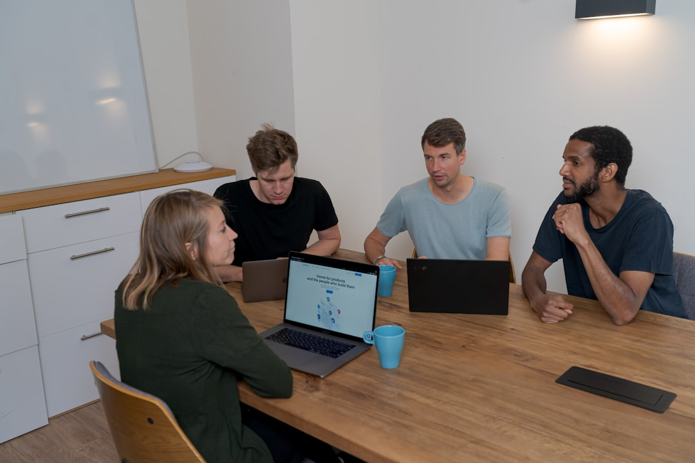
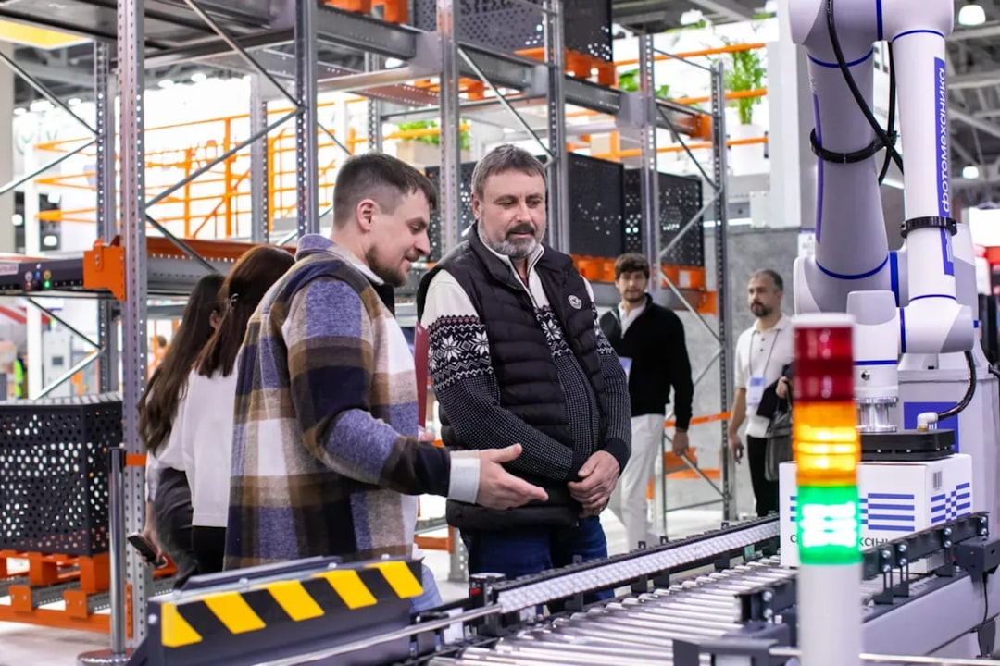
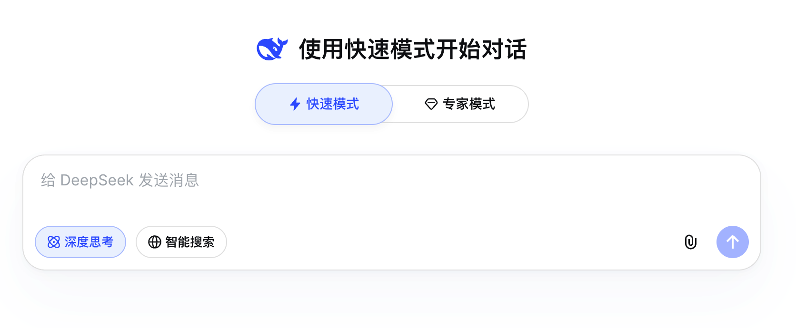

AI DAILY
AI 行业日报
2026-04-09 · 精选 8 条
01大模型
Meta 发布 Muse Spark，重返 AI 主战场

4月8日，Meta 把 Muse Spark 推进到 Meta AI 应用和美国官网，这是其 Superintelligence Labs 成立后的首个公开模型。
官方称它会陆续进入 WhatsApp、Instagram、Facebook、Messenger 和智能眼镜，并提供 Instant / Thinking 两种响应模式。
INSIGHT
Meta 这次不再先讲开源理想，先讲入口占领。模型是不是领先还得再看，但把自家流量池一起接上，留给别人的时间会更少。
02产品发布
阿里电商改按 Token 做 AI 生意

据 36氪 独家，淘天今年把 AI 重心转向 AI to B，核心 OKR 不再只是渗透率，而是商家工具留存和 AI 带来的 GMV 增长。
阿里还在内部推进 Alibaba Token Hub，并计划把千牛升级成 千牛Claw，让商家按 Token 调用 Agent 服务。
INSIGHT
这条线更像阿里在电商里补一层“云计费”。以前卖广告位，现在还想卖推理次数。商家要是真能省下运营人力，Token 这事就跑得起来。
03算力
AI 抢内存，SSD 也开始暴涨

消费级存储也被 AI 挤压了。The Verge 统计显示，WD Black SN850X 2TB 从 2024 年的 173 美元 涨到现在的 649 美元。
报道还提到 三星 990 Pro 4TB 逼近 1000 美元，核心原因是 AI 抢走 NAND 产能，而 Samsung、SK Hynix、Micron 又几乎握着整条供给链。
INSIGHT
前几个月大家还在盯 HBM 和 DRAM，现在连 SSD 都被卷进来了。上游一紧，最先感到疼的不是模型公司，是普通开发者和 DIY 用户的钱包。
04网络安全
Anthropic 限量开放网络安全模型 Mythos

Anthropic 把新网络安全模型 Claude Mythos Preview 先交给少数机构试用，公开名单包括 Broadcom、Cisco、CrowdStrike，也在和美国政府沟通使用。
公司解释，Mythos 能大规模发现漏洞，也可能被拿去放大滥用风险，所以这次只做 定向开放，不打算直接全量发布。
INSIGHT
这已经不是“模型够不够强”的问题，而是谁先拿它补洞。安全模型一旦真能把找洞效率拉开，人类安全团队的工作节奏会被彻底改写。
05产品发布
腾讯 QQ 浏览器上线 QBotClaw

腾讯把 QBotClaw 塞进了 QQ 浏览器，用户不用下载独立客户端，直接点浏览器里的 AI 入口就能用，首期先上 Mac。
官方说它支持配置主流模型 API Key、微信直连和远程调动电脑，还加了 沙箱隔离、指令约束和风险拦截规则。
INSIGHT
浏览器一直是最容易被忽视的入口，但它天生就挨着网页、文件和账号体系。腾讯这一步要是跑通，AI 助手未必先住进操作系统，可能先住进浏览器。
06市场数据
OpenAI：企业收入占比已超 40%

OpenAI 首席营收官 Denise Dresser 透露，企业客户带来的收入已经占公司总收入的 40% 以上。
她还判断，到 2026 年底，企业业务有望和消费业务打平。这说明 OpenAI 的重心，正在从全民流量转向企业预算。
INSIGHT
大模型公司前两年先抢用户心智，现在开始抢采购单。谁能把聊天窗口改成正式预算科目，谁才算真正过了商业化那道坎。
07融资
地瓜机器人再获 1.5 亿美元融资

地平线旗下 地瓜机器人 4 月 8 日宣布完成 1.5 亿美元 B2 轮融资，B 轮累计融资额来到 2.7 亿美元。
公司称自己的产品线覆盖 5 到 560 TOPS，面向人形、轮足、机器狗和物流 AMR 等多种端侧机器人场景。
INSIGHT
这笔钱不是押某一台爆款机器人，而是在押底座。真到机器人开始规模铺货的时候，卖算力模组和软硬件平台的人，往往比整机厂更先吃到肉。
08大模型
DeepSeek 上线专家模式，V4 传闻再起

DeepSeek 网页端新上了 快速模式 和 专家模式，前者偏日常问答，后者面向代码、内容生成等复杂任务，视觉模型也开始灰度测试。
社区因此又把话题拉回 V4。但截至目前，官方公开版本说明仍停在 V3.2，并没有确认专家模式背后就是完整版 V4。
INSIGHT
这次更新最有意思的，不是 V4 到底来了没有，而是 DeepSeek 终于开始做分层产品。模型再强，最后也得先把不同用户放进不同的通道。
由 Zayen知览 整理 · 构建者视角